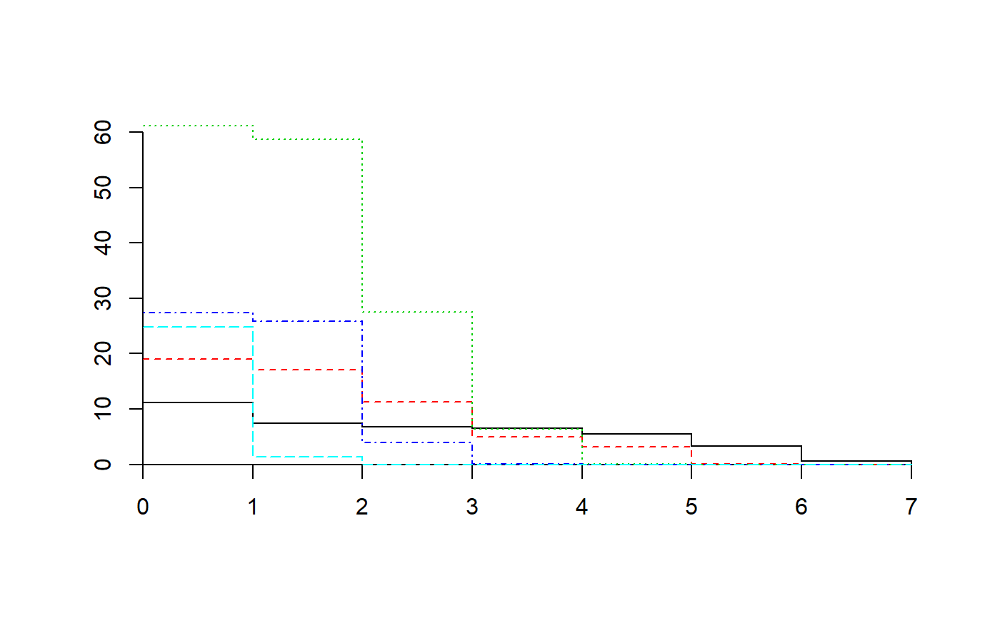
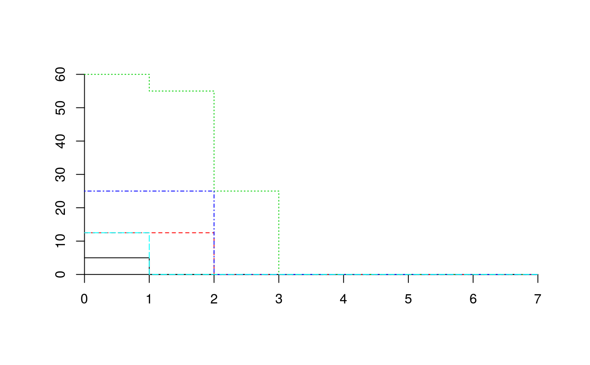

Functions to calculate cumulative abundance profiles (CAPs), to build matrices from them, and to summarize several profiles.
CAP(x, transform=NULL, verbose=FALSE) CAP2matrix(CAP, type="cumulative",classWeights=NULL) CAPcenters(CAP, y=NULL) CAPquantile(CAP, q = 0.5, y = NULL)
| x | A stratified vegetation data set (see function |
|---|---|
| transform | A function or the name of a function to be applied to each cumulative abundance value. |
| verbose | A logical flag to indicate extra output. |
| CAP | An object of class ' |
| type | The type of information that the resulting matrix should contain. Either |
| classWeights | A numerical vector containing the weight for size class. If |
| y | A vector used as a factor to calculate average or quantile profiles per each level. Alternatively, an object of class |
| q | Probability value for which the quantile is desired. By default the median is given. |
Function CAP replaces the abundance value of a size class by the sum of abundances in this and larger size classes (strata). Thus, upper classes contain smaller abundance values than lower classes, creating a cumulative abundance profile. Function CAP2matrix takes an object of class 'CAP' and returns a data matrix, where values differ depending on parameter type: (1) type="cumulative" simply reshapes the 'CAP' object (a list) into a matrix with as many rows as plot records and where columns are organized in blocks (there are as many blocks as species and each block has as many columns as size classes); (2) type="total" returns a plot-by-species matrix where each value is the total abundance of the species in the plot (i.e. the CAP value at the ground level); (3) type="volume" returns a plot-by-species matrix where each value is the sum of CAP values across size classes (a measure of the "volume" occupied by the species in the plot). When provided, classWeights are used to weight size classes of the cumulative abundance profiles (for (1) and (3) only). Function CAPcenters calculates the average abundance profile for a set of plot records. If y is a factor, it is used to speficy groups of samples for which average profiles are to be calculated. If y is an object of class 'vegclust' then the function returns the CAP centroids or medoids corresponding to the clustering result. Function CAPquantile calculates a quantile profile for a set of CAPs. The usage of y is the same as for CAPcenters.
Function CAP returns an object of class 'CAP', similar to objects of class 'stratifiedvegdata' but where abundance values of upper size classes have beed added to those of lower size classes. Function CAP2matrix returns a matrix with species as rows (columns depend on the value of type). Functions CAPcenters and CAPquantile return an object of class 'CAP'.
De Cáceres, M., Legendre, P. & He, F. (2013) Dissimilarity measurements and the size structure of ecological communities. Methods in Ecology and Evolution 4: 1167-1177.
De Cáceres, M., Coll, L., Martín-Alcón, S., González-Olabarria, J.R. (submitted) A general method for the classification of forest stands using structure and composition.
stratifyvegdata, plot.CAP, vegdiststruct
## Load stratified data data(medreg) ## Check that 'medreg' has correct class class(medreg)#> [1] "stratifiedvegdata" "list"## Look at the data for the third plot medreg[[3]]#> 1 2 3 4 5 6 7 #> Pine trees 0.0 12.5 0.0 0.0 0.0 0 0 #> Quercus trees 0.0 0.0 12.5 12.5 12.5 0 0 #> Tall shrubs and small trees 0.0 25.0 62.5 25.0 0.0 0 0 #> Scrubs and small shrubs 0.0 50.0 0.0 0.0 0.0 0 0 #> Grass 37.5 0.0 0.0 0.0 0.0 0 0## Create cumulative abundance profile (CAP) for each plot medreg.CAP = CAP(medreg) ## Look at the profile of the third plot medreg.CAP[[3]]#> 1 2 3 4 5 6 7 #> Pine trees 12.5 12.5 0.0 0 0.0 0 0 #> Quercus trees 37.5 37.5 37.5 25 12.5 0 0 #> Tall shrubs and small trees 112.5 112.5 87.5 25 0.0 0 0 #> Scrubs and small shrubs 50.0 50.0 0.0 0 0.0 0 0 #> Grass 37.5 0.0 0.0 0 0.0 0 0## Create matrix with species abundances medreg.X = CAP2matrix(medreg.CAP, type="total") head(medreg.X)#> Pine trees Quercus trees Tall shrubs and small trees Scrubs and small shrubs #> 1 0.0 37.5 87.5 50.0 #> 2 0.0 0.0 87.5 25.0 #> 3 12.5 37.5 112.5 50.0 #> 4 12.5 25.0 62.5 37.5 #> 5 0.0 25.0 75.0 25.0 #> 6 12.5 37.5 87.5 37.5 #> Grass #> 1 50.0 #> 2 12.5 #> 3 37.5 #> 4 50.0 #> 5 37.5 #> 6 50.0## Generate and plot average profile average.CAP = CAPcenters(medreg.CAP) plot(average.CAP)## Generate and plot median profile median.CAP = CAPquantile(medreg.CAP, q = 0.5) plot(median.CAP)